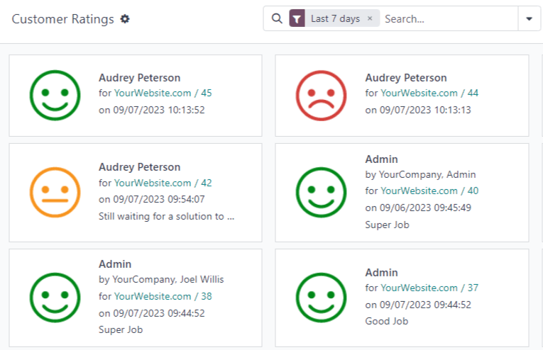

Ratings¶
At the end of a Live Chat conversation, customers have the opportunity to rate the quality of support they received from the live chat operator. Customers provide ratings as soon as they close the conversation. This allows operators to receive immediate feedback on their performance. It also allows customers the chance to share any final comments before leaving the chat window.
Rate live chat conversations¶
Customers end a live chat conversation by clicking the X in the upper right-hand corner of the chat window. They are then prompted to select an icon that reflects their level of satisfaction. The icons represent the following ratings:
Satisfied - green smiling face
Okay - yellow neutral face
Dissatisfied - red frowning face

Note
When customers end a conversation, a field marked Receive a copy of this conversation appears under the ratings icons. Customers can enter their email either before or after they submit a rating.
If the customer selects Satisfied (smile) icon, they are presented with a thank you message and a Close Conversation link.

If the customer selects either Okay (neutral) icon or Dissatisfied (frown) icon, a text box will appear. Customers can add comments in this text box to explain why they chose this rating. This message will be sent to the live chat operator, along with the rating icon.

Publish customer ratings¶
To publish a channel’s ratings on the website, first navigate to a live chat channel’s record by going to the app and clicking on the kanban card for that team. Then click on the Go to Website smart button. This will open the Live Chat Channel Statistics page.
In the upper right corner of the page, click the red Unpublished slider. The slider changes from Unpublished to Published.

Note
The customer notes that are submitted with the rating will not be published on the website. These are kept internal. Only a statistical overview of the operators’ performance for the channel appears on the website.
Add ratings page to site¶
Once the rating page has been published, it has to be manually added to the website. To do this, go to the main Odoo dashboard and open the Website application. , then click New.
This will open a New Page pop-up window. In the Page Title field, enter
livechat. This acts as the URL for the published webpage.
Important
The URL must be named livechat in order for the database to recognize and connect the
ratings page. After the page has been published, the page title can be changed later under the
Menu Editor.
Click Create, and the newly created webpage will open. The Webpage Editor appears in the right panel.
The page lists the names of the Live Chat Channels whose ratings pages have been published. On the left side of the channel name is a speech bubble icon, which users can click on to go to the ratings’ page for the respective channel.
Make any desired changes or additions to this page, then click Save in the top right of the webpage editor. The website editor side panel closes, and the webpage remains on the screen.
To publish the livechat webpage, return to the list of webpages by navigating to
. Click the checkbox to the left of livechat in the
list of pages to select the page and highlight the line. Then, click the checkbox under the column
labeled Is Published. The field with the checkbox is highlighted in white. Click the
checkbox a second time to activate the Is Published box. The webpage is now published.

Once the page has been added to the site, ratings are set to be published by default. However, individual ratings can be manually selected to be hidden from the public. The rating will still be included in internal reports, and can still be viewed by internal teams. However, public website visitors and portal users will not have access.
See Hide individual ratings for more information.
Customer ratings report¶
The Customer Ratings report () displays an overview of the ratings received on individual support tickets, as well as any additional comments submitted with the rating.
The report defaults to a kanban view, with each rating represented by a different card. To switch to a different view, click on one of the icons in the upper-right corner of the screen. The report is available in list view, pivot view, and graph view.
Click on an individual rating to see additional details about the conversation, and the rating.
Hide individual ratings¶
Ratings are set to be published by default. However, individual ratings can be manually selected to be hidden from the public. The rating will still be included in internal reports, and can still be viewed by internal teams. However, public website visitors and portal users will not have access.
To hide a rating, go to . Click on the kanban card for the rating to be hidden. On the individual rating’s detail page, check the box labeled Visible Internally Only.